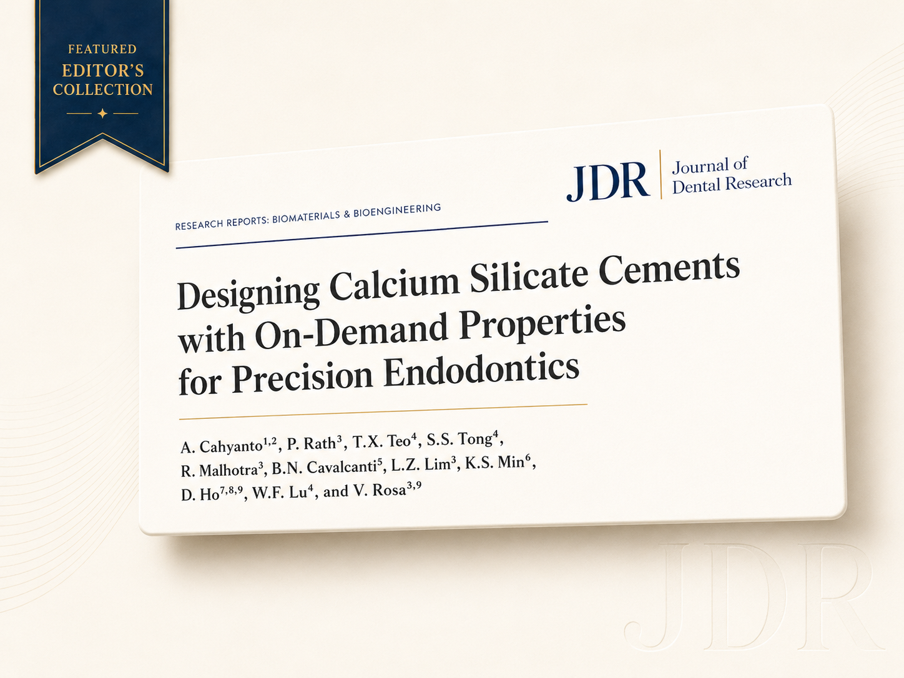

A/P Rosa's work selected for the JDR Editor's Choice Collection 2023
The Journal of Dental Research included a work from the NUS group in its editorial collection of the year's most impactful articles.

The Journal of Dental Research (JDR), the world’s leading dental research journal, selected a work from Associate Professor Vinicius Rosa’s group at NUS for its Editor’s Choice Collection 2023. The distinction identifies articles published in the JDR that the editorial committee considers of greatest relevance, originality, and impact for the field.
Editorial selection represents an additional recognition beyond publication itself: works included in the collection are highlighted as indispensable references in their respective areas, amplifying their visibility within the international scientific community.
An editorial selection that marks the works with the highest impact and relevance in dental research.
The JDR is the official publication of the International Association for Dental, Oral and Craniofacial Research (IADR) and one of the highest-impact journals in the field. Inclusion in its Editor’s Choice Collection reinforces the contribution of the NUS group to advancing knowledge in biomaterials and translational dentistry.